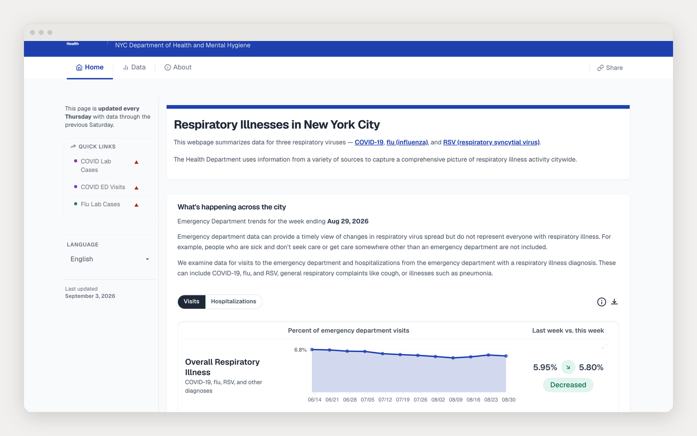
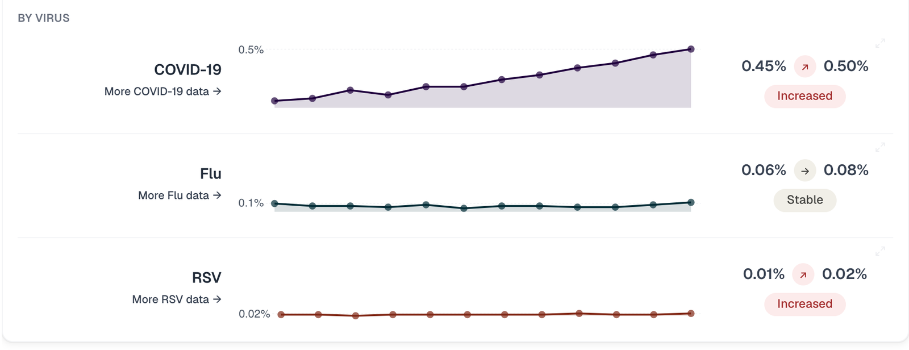
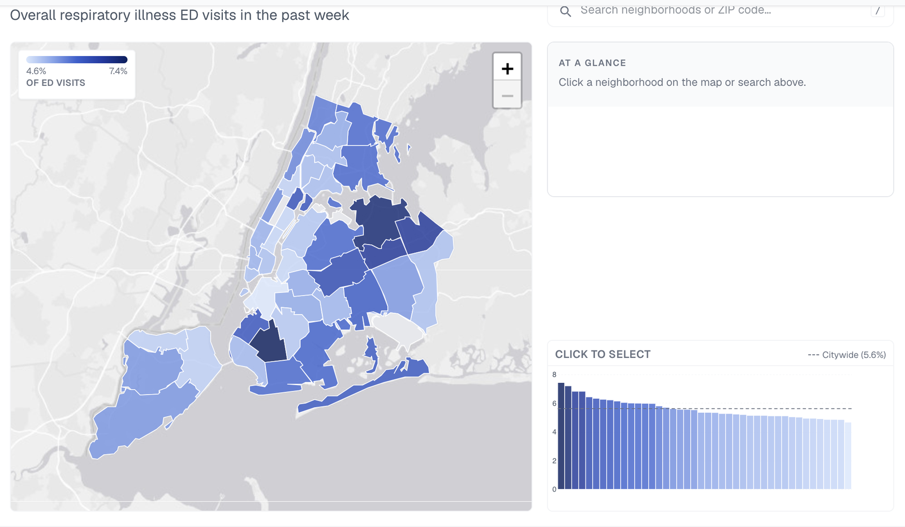

Case study
A citywide respiratory illness tracker
One place for New Yorkers to see how COVID-19, flu, and RSV are moving across the city, updated on the same schedule every week.
- Role
- Product lead and lead engineer
- Timeframe
- 2023–present
- Team
- Built with epidemiologists, surveillance data teams, and communications
- Stack
- React, Vega-Lite, D3, Azure
- Cadence
- Updated weekly
- Live
- nyc-respiratory-illness.netlify.app

01Overview
During respiratory season the Health Department fields the same question from the press, elected officials, and the public: is it getting worse? The answer lived across separate COVID-19, flu, and RSV pages, each with its own charts, its own framing, and its own update cadence. There was no single view of respiratory illness activity citywide.
I led design and build of one tracker that summarizes emergency department visits, hospitalizations, and laboratory data for all three viruses. It updates every Thursday with data through the previous Saturday, and it is built as a modular React front-end over datasets that come from several different systems.
02The problem
- Three viruses, three pipelines, three pages. Nothing answered "how bad is it right now" across all of them at once.
- Emergency department data is timely but easy to misread. A line going up needs context: a comparison, a baseline, and plain language, not just a chart.
- The weekly update was manual and fragile. Refreshing three sets of charts from different source systems every week invited mistakes.
- Two audiences, one page. One person is scanning on a phone during a news cycle; another is downloading the numbers for a report.
03What I built
The design starts from the question and works down to the detail.
- A summary-first layout. The top of the page answers "what is happening across the city" in one sentence and one chart, overall respiratory illness with a last-week versus this-week readout. The virus-by-virus breakdown is a scroll away for people who want it.
- One chart grammar. Every indicator uses the same encoding: an area for the trend, a paired last-week and this-week number, and a plain-language direction (increased, decreased, or stable). A reader learns it once and reuses it everywhere.
- A modular data layer. Each source (syndromic emergency department data, laboratory reports, hospitalizations) is ingested and normalized into a common shape. The front-end reads one set of JSON, so adding a virus or a metric does not touch the interface.
- Built for the weekly cycle. The data changes once a week, not live, so the front-end is a static bundle served from Azure. The weekly job publishes fresh JSON and the site picks it up.

The same layout also runs at the neighborhood scale: the citywide emergency-department rate mapped by community district, with a ranked comparison and an at-a-glance panel for whichever area you select.

Throughout: semantic structure and keyboard-navigable controls, a text alternative for every chart, color chosen for contrast and color-vision differences, and a data download on each chart.
04Key decisions
Lead with one citywide number
I resisted opening with a wall of charts. The one-sentence summary is what the press quotes and what a resident actually needs; the detail is one scroll down, not gone.
Normalize sources into one schema
More pipeline work upfront, but it made the front-end simple and turned the weekly update from a careful manual task into a mechanical one.
Static front-end, no server
The data moves weekly, not in real time. Pre-building JSON and serving a static bundle is cheaper, faster, and far harder to break than a live backend.
05Results
Figures in brackets are estimates from internal reporting; confirm before citing.
The tracker is now the Health Department’s single public reference for respiratory illness activity, and the weekly refresh runs on a schedule rather than by hand.
06What’s next
- Wastewater surveillance as a leading indicator alongside emergency department data.
- A neighborhood-level breakdown for the boroughs and community districts.
- Automated anomaly flagging to speed the weekly epidemiology review.